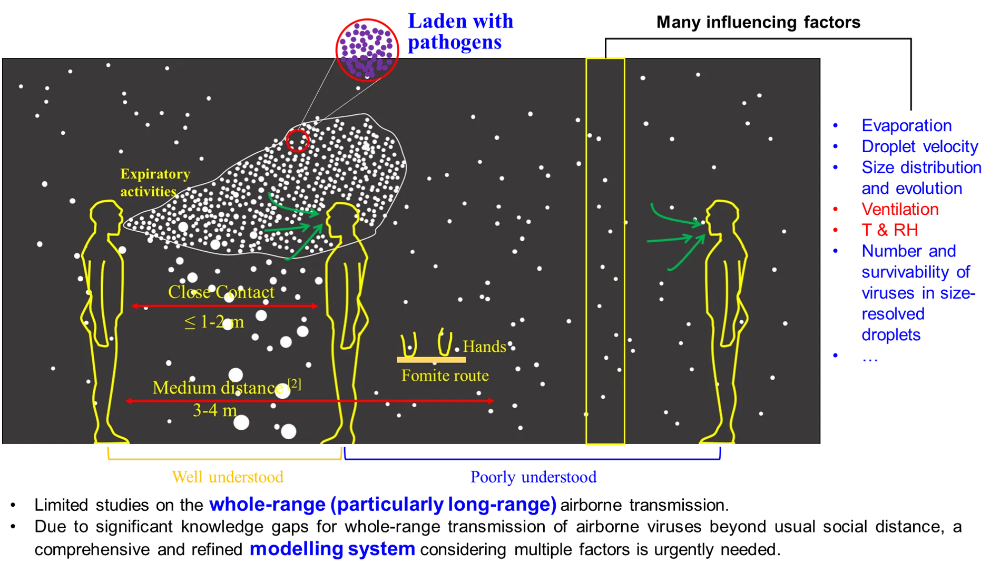
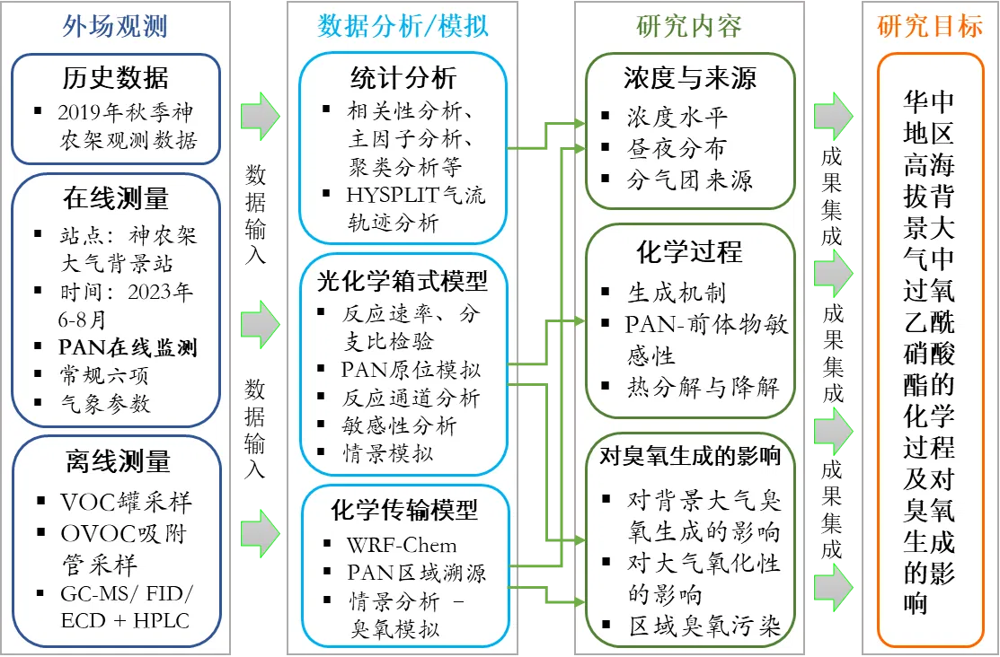

Selected Projects
By developing and applying time-chemically resolved analysis techniques and observation-based-verified models, we focus our research on atmospheric chemistry of reactive organics and the secondary products, as well as the health, environmental, and climate effects of related air pollution.

CEPU/PPRFS (2023.A2.059.23C)
What are the implications of COVID-19 restrictions for ozone pollution

RGC/GRF (15209223)
What has driven the ozone increase in Hong Kong over the past decade?
RGC/GRF (15219621)
Rise in summertime ozone levels in South China: Impacts of long-range transpor

RGC/CRF (C5024-21G)
Is the usual social distance sufficient to avoid airborne infection of expira

NSFC/Young Scientists Fund (42207111)
華中地區高海拔背景大氣中過氧乙酰硝酸酯的化學過程及對臭氧生成的影響